PSAT-언어논리 (2013-02-02 기출문제)
1. 다음 글의 내용과 부합하는 것을 ＜보기＞에서 모두 고르면?
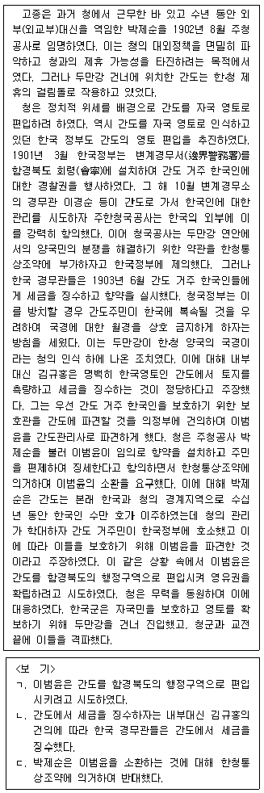
- ㄱ
- ㄷ
- ㄱ, ㄴ
- ㄴ, ㄷ
- ㄱ, ㄴ, ㄷ
(정답률: 알수없음)

2. 다음 글의 ㉠~㉢에 해당하는 것을 ＜보기＞에서 골라 알맞게 짝지은 것은?(순서대로 ㉠, ㉡, ㉢)
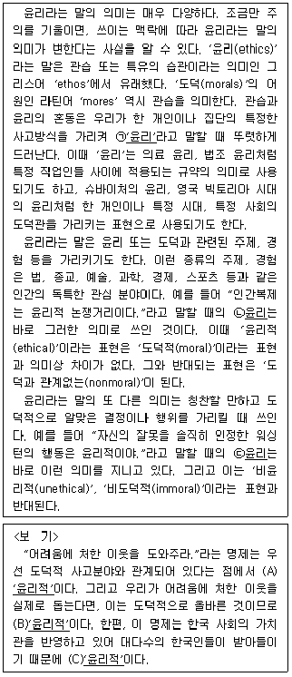
- A, B, C
- A, C, B
- B, A, C
- C, A, B
- C, B, A
(정답률: 알수없음)
3. 다음 글의 내용과 부합하지 않는 것은?
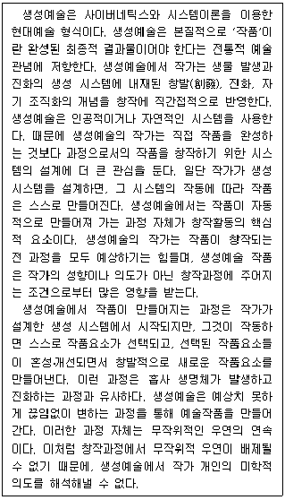
- 생성예술에서는 무작위적 우연이 개입되어 작품을 만들어간다.
- 생성예술에서는 완성된 최종 결과물이 곧 작가의 창작의도이다.
- 생성예술에서는 작품의 완성보다 작품이 만들어지는 과정이 창작활동의 핵심으로 이해된다.
- 생성예술에서 작품요소가 선택되고 혼성ㆍ개선되는 과정 중간에 작가는 직접 개입하지 않는다.
- 생성예술에서 작가가 시스템을 설계하면, 그 시스템은 생명체가 발생하고 진화하는 것처럼 스스로 작품을 조직해 나간다.
(정답률: 알수없음)
4. 다음 글의 내용과 부합하는 것은?
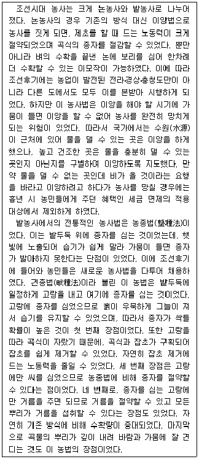
- 정부는 가뭄의 위험을 이유로 이앙법의 보급을 최대한 저지하였다.
- 견종법은 농종법에 비해 수확량은 많았지만 보다 많은 거름을 필요로 하였다.
- 이앙법과 견종법 모두 기존의 방식에 비해 제초에 드는 노동력을 절약할 수 있었다.
- 농종법으로 농사를 지을 때에는 밭두둑이 필요하였지만, 견종법은 밭두둑을 필요로 하지 않았다.
- 이앙법은 종자를 절약할 수 있었지만, 견종법은 기존의 방식에 비해 종자의 소모량에는 큰 차이가 없었다.
(정답률: 알수없음)
5. 다음 글의 내용과 부합하는 것은?
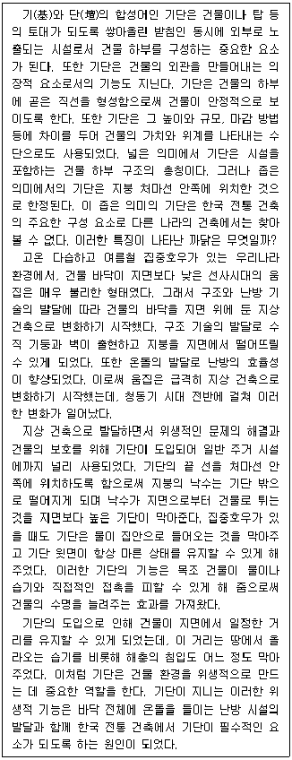
- 기단의 도입에는 청동기 시대 전반에 걸친 기후 환경의 변화가 주요한 요인으로 작용하였다.
- 기단의 높이나 넓이는 건물의 구조적 안정성보다는 그 건물의 가치와 위계를 고려하여 결정되었다.
- 한국 전통 건축에서 기단은 수직 기둥과 벽의 출현 등 가옥 구조 기술의 발달을 가져온 요소이다.
- 좁은 의미의 기단은 우리나라 전통 건축에서 해충 및 습기 방지와 온돌 설치를 위해 도입되었다.
- 우리나라 전통 건축에서 지붕보다 좁고 지면보다 높게 설치된 기단은 목조 건물의 수명을 연장하는 데 도움을 주었다.
(정답률: 알수없음)
6. 다음 글의 내용과 부합하는 것은?
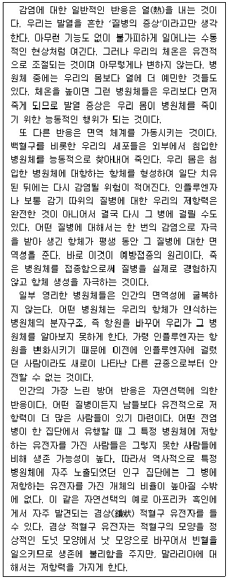
- 발열 증상은 수동적인 현상이지만 감염병의 회복에 도움을 준다.
- 예방접종은 질병을 실제로 경험하게 하여 항체 생성을 자극한다.
- 겸상 적혈구 유전자는 적혈구 모양을 도넛 모양으로 변화시켜 말라리아로부터 저항성을 가지게 한다.
- 병원체의 항원이 바뀌면 이전에 형성된 항체가 존재하는 사람도 그 병원체가 일으키는 병에 걸릴 수 있다.
- 어떤 질병이 유행한 적이 없는 집단에서는 그 질병에 저항력을 주는 유전자가 보존되는 방향으로 자연선택이 이루어졌다.
(정답률: 알수없음)
7. 다음 글에서 추론할 수 없는 것은?
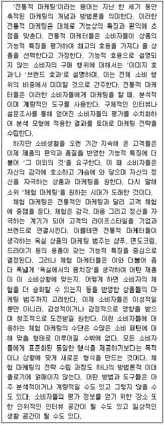
- 체험 마케팅의 수단과 전략 수립 과정은 다양한 형태로 나타난다.
- 체험 마케터는 전통적 마케터보다 상품의 마케팅 범주를 더 넓게 설정한다.
- 체험 마케팅의 발달은 오늘날의 소비자들이 상품의 기능적 효용보다는 감성적 측면을 더 중시함을 반영한다.
- 전통적 마케터는 계량화된 분석 결과를 토대로 기능적 효용을 중시하는 소비자를 대상으로 하는 전략을 수립한다.
- 전통적 마케터들은 소비자의 브랜드나 이미지에 의한 소비 비중이 기능적 효용에 의한 소비 비중에 비해 작은 것으로 간주한다.
(정답률: 알수없음)
8. 다음 글에서 추론할 수 있는 것은?
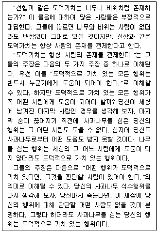
- 도덕적으로 가치 있는 행위는 잘못 판단될 수 없다.
- 도덕적으로 가치 있는 행위는 선한 사람의 존재를 전제한다.
- 어떤 행위는 도덕적으로 가치가 있지만 그것을 판단할 사람이 없을 수 있다.
- 도덕적으로 가치 있는 행위라면, 이로 인해 도움을 받는 사람이 반드시 있다.
- 어떤 행위는 도덕적으로 가치가 없지만 이로 인해 피해를 입는 사람이 반드시 있다.
(정답률: 알수없음)
9. 다음 글에서 추론할 수 있는 것을 ＜보기＞에서 모두 고르면?
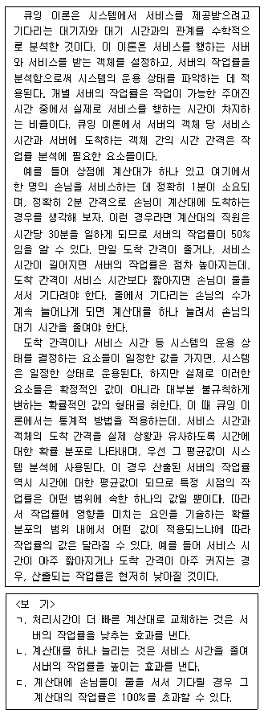
- ㄱ
- ㄴ
- ㄱ, ㄷ
- ㄴ, ㄷ
- ㄱ, ㄴ, ㄷ
(정답률: 알수없음)
10. 다음 밑줄 친 결론을 이끌어내기 위해 추가해야 할 전제는?
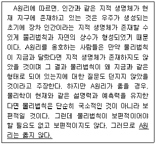
- 보편적인 물리법칙은 설명력과 예측력을 갖는다.
- 대부분의 물리학자들은 항상 합리적인 판단을 한다.
- 물리학이 현재와 같은 설명력과 예측력을 유지한다.
- 물리학이 현재 가지는 설명력과 예측력은 제한적이다.
- 물리법칙과 자연의 상수가 지금과 같다면 우주에는 지적 생명체가 존재한다.
(정답률: 알수없음)
11. 신입 직원 갑, 을, 병, 정, 무가 기획과, 인력과, 총무과 가운데 어느 한 부서에 배치될 예정이다. 다음 진술들이 참일 때, 반드시 참인 것은?
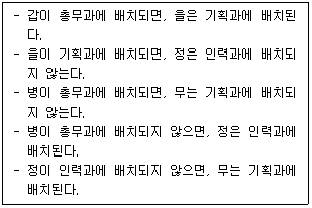
- 갑은 총무과에 배치되지 않는다.
- 을은 총무과에 배치된다.
- 병은 기획과에 배치된다.
- 정은 인력과에 배치되지 않는다.
- 무는 총무과에 배치된다.
(정답률: 알수없음)
12. 다음 글의 ㉠, ㉡에 들어갈 말로 가장 적절한 것은?
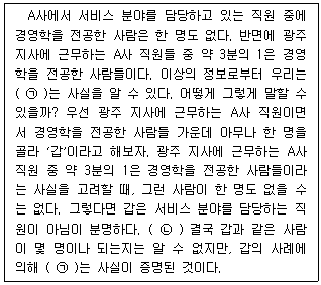
- ㉠:광주 지사에는 서비스 분야 담당이 아닌 A사 직원도 있다
㉡:갑이 서비스 분야를 담당하는 직원이라면 “A사의 서비스 분야 직원 중에는 경영학을 전공한 사람은 한 명도 없다.”는 전제와 모순되기 때문이다. - ㉠:광주 지사에는 서비스 분야 담당이 아닌 A사 직원도 있다
㉡:갑이 경영학 전공자일 경우에만 서비스 분야를 담당할 수 있기 때문이다. - ㉠:광주 지사에는 서비스 분야 담당이 아닌 A사 직원도 있다
㉡:갑이 서비스 분야 담당인 경우에만 경영학 전공자일 수 있기 때문이다. - ㉠:광주 지사에서 경영학을 전공하지 않은 사람 중에 서비스 분야를 담당하는 직원이 있다
㉡:갑이 서비스 분야를 담당하는 직원이라면 “A사의 서비스 분야 직원 중에는 경영학을 전공한 사람은 한 명도 없다.”는 전제와 모순되기 때문이다. - ㉠:광주 지사에서 경영학을 전공하지 않은 사람 중에 서비스 분야를 담당하는 직원이 있다
㉡:갑이 서비스 분야 담당인 경우에만 경영학 전공자일 수 있기 때문이다.
(정답률: 알수없음)
13. 다음 밑줄 친 물음에 대한 답변으로 적절하지 않은 것은?
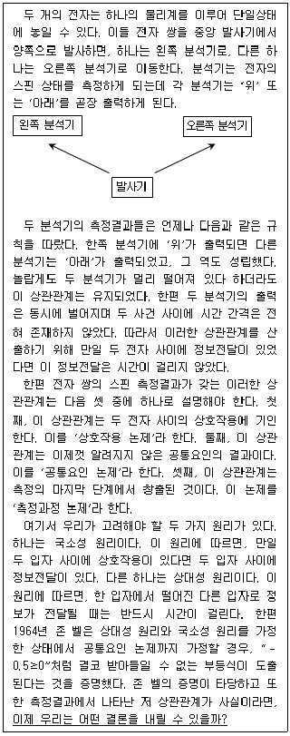
- 상대성 원리와 국소성 원리를 받아들인다면, 측정과정 논제를 받아들여야 한다.
- 상대성 원리와 국소성 원리를 받아들인다면, 상호작용 논제를 받아들여야 한다.
- 상대성 원리와 국소성 원리를 받아들인다면, 공통요인 논제를 거부해야 한다.
- 상대성 원리와 공통요인 논제를 받아들인다면, 국소성 원리를 거부해야 한다.
- 국소성 원리와 공통요인 논제를 받아들인다면, 상대성 원리를 거부해야 한다.
(정답률: 알수없음)
14. 다음 글에서 추론할 수 있는 것을 ＜보기＞에서 모두 고르면?
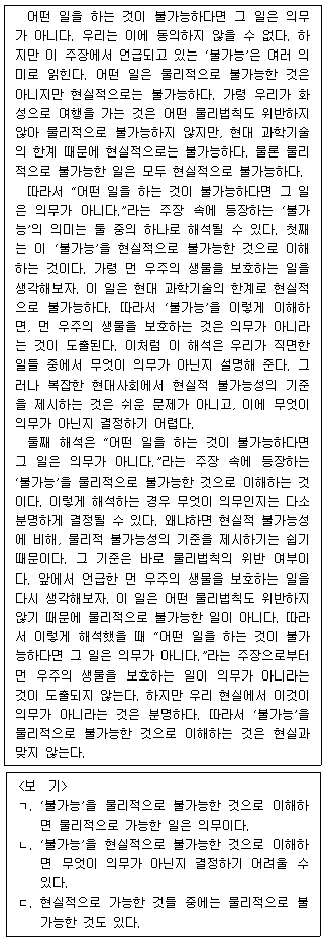
- ㄱ
- ㄴ
- ㄱ, ㄷ
- ㄴ, ㄷ
- ㄱ, ㄴ, ㄷ
(정답률: 알수없음)
15. 다음 글에서 추론할 수 있는 것을 ＜보기＞에서 모두 고르면?
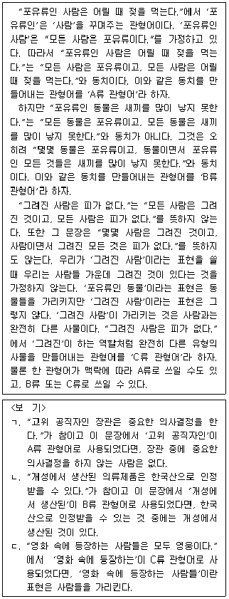
- ㄱ
- ㄷ
- ㄱ, ㄴ
- ㄴ, ㄷ
- ㄱ, ㄴ, ㄷ
(정답률: 알수없음)
16. 다음 글의 내용이 참일 때, 밑줄 친 주장을 참으로 만들기 위해 추가되어야 하는 전제는?
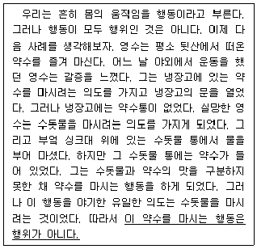
- 어떤 의도가 우연히 실현된 행동도 행위라고 할 수 있다.
- 행위자는 자신의 욕구가 무엇인지 정확히 모르는 경우에도 행동을 할 수 있다.
- 어떤 행동이 일어나는 시점에 행위자는 여러 의도를 동시에 가지고 있을 수 있다.
- 어떤 행동을 하려는 의도가 그 행동을 야기한 것이 아니라면 그 행동은 행위가 아니다.
- 행위자가 과거에 가졌던 의도들 중에서 무엇이 실현되었는지에 따라서 행위 여부가 결정된다.
(정답률: 알수없음)
17. 다음 글을 비판하기 위한 통계자료로 사용하기에 적절한 것을 ＜보기＞에서 모두 고르면?
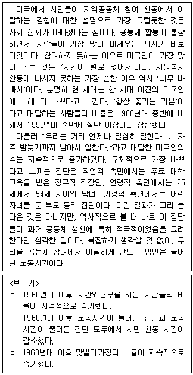
- ㄱ
- ㄴ
- ㄷ
- ㄱ, ㄴ
- ㄴ, ㄷ
(정답률: 알수없음)
18. 다음 글의 (가)와 (나)의 반례로 적절한 것은?
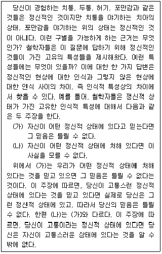
- (가)의 반례:철수는 머리가 무거움을 느껴 두통이 심한 상태라고 믿지만 그는 두통이 없는 상태이다.
- (가)의 반례:영수는 무릎을 심하게 다쳐 아픈 상태이지만 그는 아프다는 것을 모르고 있다.
- (나)의 반례:지수는 자신의 심장에 이상이 생겼다고 믿고 있지만 그의 심장에는 별 이상이 없다.
- (나)의 반례:정수는 치열한 교전 중에 총상을 입었지만 그 사실을 모르고 있었다.
- (나)의 반례:친한 친구가 사고로 사망을 했지만 민수는 슬프지 않다.
(정답률: 알수없음)
19. 위 글의 내용으로부터 현명이는 “철이는 영이를 좋아하지 않고 영이는 능력이 있는 사람이다”라고 결론을 내렸다. 하지만 위 글의 내용으로부터 이러한 결론이 반드시 따라나오지는 않는다. 이 결론이 반드시 따라나오기 위해 추가될 전제로 적절한 것은?(19번 공통지문 문제)
- 영이는 원만한 성격의 소유자이고 영이는 건강한 여성이 아니다.
- 영이는 원만한 성격의 소유자이고 돌이는 영이를 좋아한다.
- 석이는 영이를 좋아하지 않고 돌이는 영이를 좋아한다.
- 영이는 건강한 여성이 아니고 돌이는 영이를 좋아한다.
- 석이는 영이를 좋아하지 않고 영이는 건강한 여성이다.
(정답률: 알수없음)
20. 다음 글의 내용과 부합하지 않는 것은?
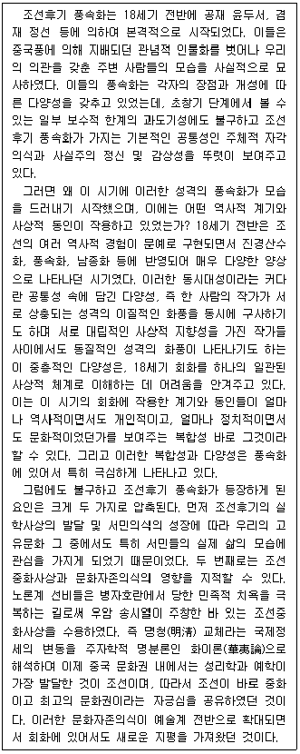
- 윤두서의 풍속화에서는 사실주의 정신이 뚜렷이 나타났다.
- 서민의식의 성장이 조선후기 풍속화 등장의 한 요인이었다.
- 조선이 바로 중화라는 생각은 중국풍 그림의 발전에 기여하였다.
- 조선후기 풍속화와 진경산수화에는 조선의 역사적 경험이 반영되었다.
- 서로 대립적인 사상을 가진 작가가 비슷한 화풍의 그림을 그리기도 했다.
(정답률: 알수없음)
21. 다음 글의 문맥상 (가)와 (나)에 들어가기에 가장 적절한 것을 ＜보기＞에서 골라 알맞게 짝지은 것은?(순서대로 (가), (나))
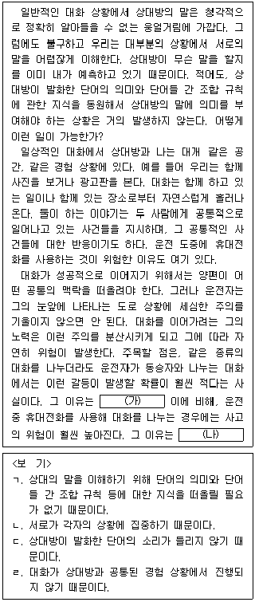
- ㄱ ㄷ
- ㄱ ㄹ
- ㄴ ㄷ
- ㄴ ㄹ
- ㄹ ㄷ
(정답률: 알수없음)
22. 다음 글의 내용과 부합하는 것은?
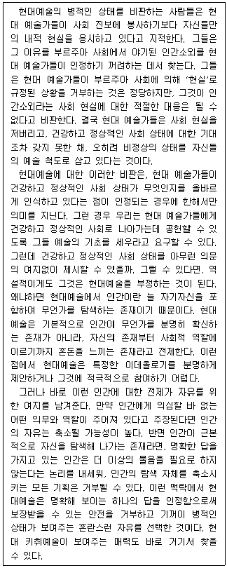
- 현대예술은 인간이 무언가를 탐색하는 존재라고 보며 혼란스런 자유를 선택한다.
- 현대예술은 건강하고 정상적인 사회 상태가 무엇인지를 올바르게 인식하고 있다.
- 현대예술은 인간소외 이외의 다른 사회문제에 대해서는 무관심하다는 이유로 비판받는다.
- 현대예술은 자신의 사회적 역할을 명확히 인식하지만, 이로부터 예술의 기초를 세우지는 못한다.
- 현대예술은 특정한 이데올로기에 참여하는 인간이라야 스스로 병적인 상태를 극복할 수 있다고 본다.
(정답률: 알수없음)
23. 다음 글에서 추론할 수 있는 것을 ＜보기＞에서 모두 고르면?
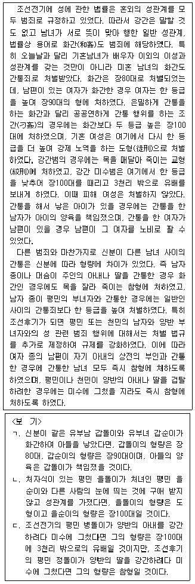
- ㄱ
- ㄴ
- ㄱ, ㄷ
- ㄴ, ㄷ
- ㄱ, ㄴ, ㄷ
(정답률: 알수없음)
24. 다음 글의 내용과 부합하는 것은?
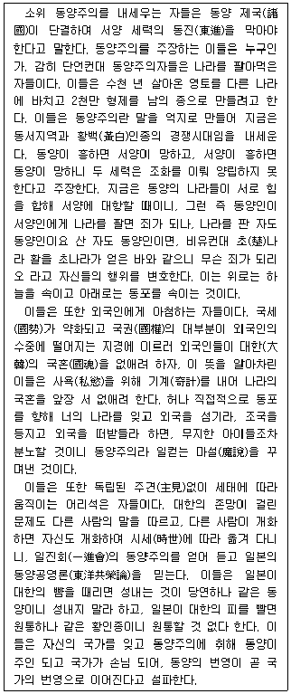
- 동양주의자들은 대한이 번영해야 동양이 번영한다고 주장한다.
- 동양주의자들은 대한의 국혼(國魂)을 보존하고자 외국인에게 아첨한다.
- 동양주의자들은 노력에 따라 번영이 가능하다는 확고한 주견을 가지고 있다.
- 동양주의자들은 동양과 서양의 힘의 균형을 통한 세계평화가 가능하다고 본다.
- 동양주의자들은 동양인들끼리 나라를 사고 파는 것은 죄가 되지 않는다고 변명한다.
(정답률: 알수없음)
25. 다음 글에서 추론할 수 없는 것은?
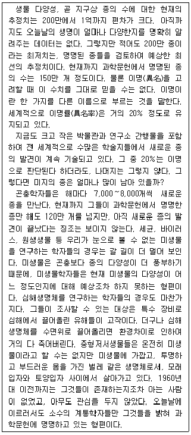
- 중형저서생물은 1960년대 이후에야 기록되기 시작했다.
- 심해생명체를 살아있는 상태로 연구하는 것이 아직까지는 쉽지 않다.
- 곤충학자들은 해마다 미생물학자들보다 더 많은 새로운 종을 발견한다.
- 명명된 종들 중에서 곤충이 아닌 나머지 생물 종들의 수는 곤충보다 많지 않다.
- 과학문헌에 기재된 종들 중에서 실제로 존재하는 종들의 수는 명명된 종들의 수보다 적다.
(정답률: 알수없음)
26. 다음 글에서 알 수 있는 것은?
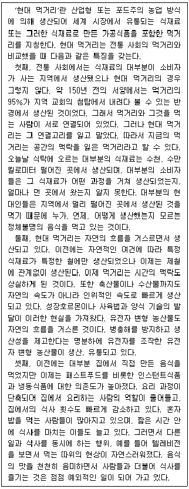
- 간편하게 조리할 수 있고 신속하게 먹을 수 있는 즉석조리식품은 현대 먹거리의 특징을 지닌다.
- 글쓴이는 현대 먹거리에 부정적이며 전통 사회의 먹거리 생산 방식으로 회귀해야 할 당위성을 주장한다.
- 병충해 방지와 식량의 증산을 위해서 사육기간을 단축하고 유전자 조작 식품을 생산하는 것은 안전하지 않다.
- 이력추적제를 통해 누가, 언제, 어떻게 생산했는지 알 수 있는 소고기의 경우 시간적 맥락에서는 전통 사회 먹거리의 특징을 지닌다.
- 온실 채소는 계절에 관계없이 사철 공급될 수 있다는 장점이 있지만 공간의 맥락이 상실되었다는 점에서 현대 먹거리의 특징을 지닌다.
(정답률: 알수없음)
27. 다음 글에서 추론할 수 있는 것은?
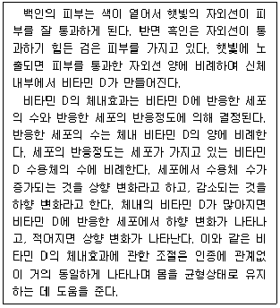
- 인위적인 비타민 D의 섭취는 상향 변화를 일으킬 것이다.
- 비타민 D 수용체의 수가 줄어들면 체내의 비타민 D 생산이 증가할 것이다.
- 햇빛이 있는 동일 지역에서 백인보다 흑인이 비타민 D의 체내효과가 더 클 것이다.
- 햇빛이 있는 동일 지역에서 흑인보다 백인이 비타민 D에 반응하는 세포가 더 많을 것이다.
- 어떤 사람이 자외선이 적은 지역으로 이동하면, 그 사람의 비타민 D 수용체 수는 감소할 것이다.
(정답률: 알수없음)
28. 다음 글에서 추론할 수 없는 것은?
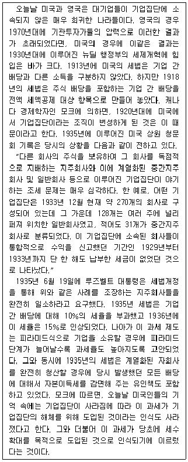
- 현재 세계적으로 기업집단에 속하여 있는 대기업을 가진 나라가 많다.
- 루즈벨트 대통령이 시행한 세제개혁은 당근과 채찍을 모두 포함한 것이었다.
- 영국에서 대기업들이 기업집단에 소속되지 않게 된 원인은 미국의 그것과 다르다.
- 오늘날 미국인들은 세수 증대의 방편 중 하나로 현재 미국 기업집단의 해체를 들고 있다.
- 미국의 1918년 세법과 1936년 세법은 기업 간 배당에 대해 각기 상이한 과세원칙을 적용했다.
(정답률: 알수없음)
29. 다음 글에서 추론할 수 있는 것을 ＜보기＞에서 모두 고르면?
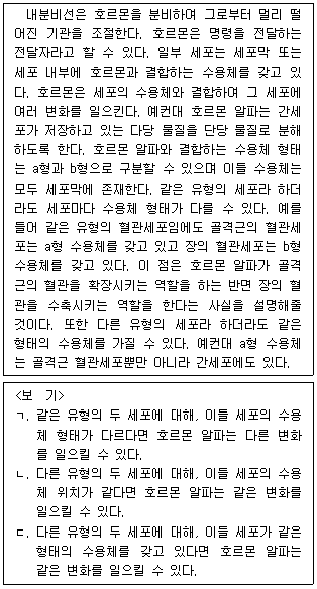
- ㄱ
- ㄴ
- ㄱ, ㄴ
- ㄱ, ㄷ
- ㄴ, ㄷ
(정답률: 알수없음)
30. A, B, C 세 사람이 어떤 표결에 참여해 찬성했거나 반대했거나 기권했다. 그리고 표결이 끝난 후 세 사람이 아래와 같이 두 가지 진술을 각각 했는데, 그 두 진술 가운데 하나는 참이고 다른 하나는 거짓이다. 반드시 참인 것은?
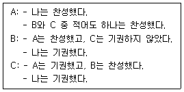
- A와 B는 모두 찬성했다.
- A와 B는 모두 기권했다.
- A와 C는 모두 찬성했다.
- B와 C는 모두 반대했다.
- B와 C는 모두 기권했다.
(정답률: 알수없음)
31. 다음 글의 영희의 논증이 성립하기 위해 추가로 필요한 가정은?
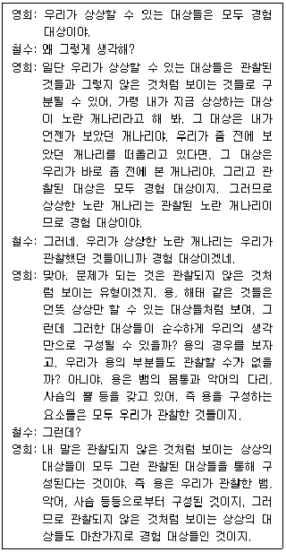
- 경험할 수 있는 것들은 모두 관찰 대상이다.
- 직접 경험과 간접 경험을 우리는 구분할 수 있다.
- 관찰된 대상들로 구성된 대상도 관찰된 대상이다.
- 관찰되지 않은 대상은 경험 대상을 통해 구성된다.
- 경험 대상이 아니지만 상상할 수 있는 대상이 있다.
(정답률: 알수없음)
32. 다음 <현상>을 <이야기>에 비유하여 이해한 것으로 적절한 것은? (단, 금속 표면에 쪼인 빛은 바깥에서 은행 안으로 건네준 돈에 비유되고 있다)
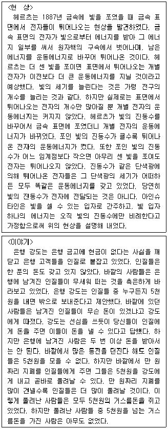
- 금속 표면의 원자는 은행 안에 갇힌 인질에 비유되고 있다.
- 빛의 진동수는 바깥에서 건네준 돈의 개수에 비유되고 있다.
- 튀어나온 전자의 운동에너지는 인질이 강도에게 내야 하는 금액에 비유되고 있다.
- 표면을 튀어나온 전자의 개수는 풀려난 인질이 받은 거스름돈의 액수에 비유되고 있다.
- 금속 표면의 전자 하나가 빛에서 받은 에너지는 바깥에서 건네받은 돈 하나의 금액에 비유되고 있다.
(정답률: 알수없음)
33. 다음 글의 내용이 참일 때, 반드시 참인 것을 ＜보기＞에서 모두 고르면?
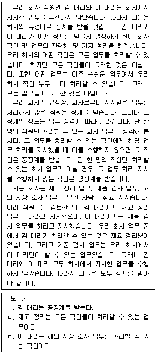
- ㄱ
- ㄴ
- ㄷ
- ㄱ, ㄴ
- ㄴ, ㄷ
(정답률: 알수없음)
34. 다음 (가)~(마)의 관계에 대한 평가로 적절한 것은?
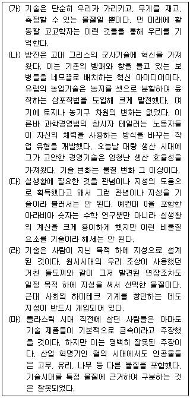
- (가)와 (다)의 주장은 양립할 수 없다.
- (나)의 사례들은 (가)의 주장을 강화한다.
- (나)의 사례들은 (라)의 주장을 약화하지 않는다.
- (다)는 (가)의 주장을 약화한다.
- (라)와 (마)의 주장은 양립할 수 없다.
(정답률: 알수없음)
35. 다음 대화에서 갑과 을 모두가 동의하는 주장을 ＜보기＞에서 모두 고르면?
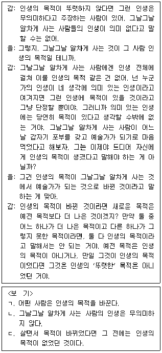
- ㄱ
- ㄴ
- ㄷ
- ㄱ, ㄴ
- ㄴ, ㄷ
(정답률: 알수없음)
36. 다음 글의 주장을 약화하는 사례를 ＜보기＞에서 모두 고르면?
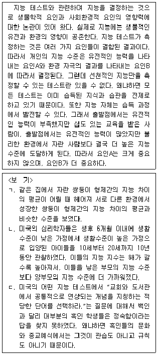
- ㄱ
- ㄴ
- ㄷ
- ㄱ, ㄴ
- ㄱ, ㄷ
(정답률: 알수없음)
37. 다음 글의 '가설A'와 '가설B'에 대한 평가로 적절한 것은?
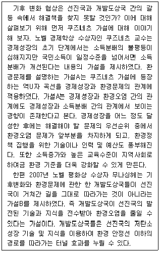
- 1인당 국민소득이 선진국에 진입하는 시점을 계기로 환경오염이 개선된다면 가설A는 약화된다.
- 경제성장이 높은 수준에 도달한 국가들 중에 온실가스 증가율이 둔화되지 않는 국가가 있다면 가설A는 강화된다.
- 경제성장의 초기 단계의 국가들 중에 환경오염 문제를 우선적으로 해결해야 할 문제로 여기는 국가가 있다면 가설A는 강화된다.
- 지리적으로 인접한 개발도상국의 환경오염을 우려하여 선진국이 그 개발도상국에 발전된 지식과 기술을 전수하여 환경오염이 개선되었다면 가설B는 강화된다.
- 선진국이 자국의 환경문제를 해결하기 위해서 환경오염을 유발할 가능성이 높은 산업을 개발도상국으로 이전하려는 경향이 크다면 가설B는 강화된다.
(정답률: 알수없음)
38. 위 글의 내용과 부합하는 것을 ＜보기＞에서 모두 고르면?(39번 공통지문 문제)
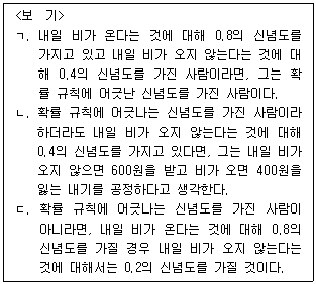
- ㄱ
- ㄴ
- ㄱ, ㄷ
- ㄴ, ㄷ
- ㄱ, ㄴ, ㄷ
(정답률: 알수없음)